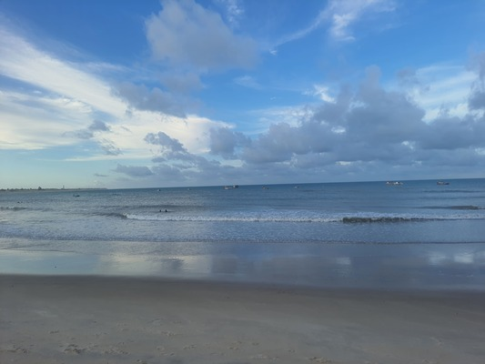

Yasmin Fernandes
"Que a minha vida seja um reflexo do amor de Deus
em tudo o que eu faço"
Sobre mim
Olá, sejam bem-vindos ao meu blog! Meu nome é Yasmin, tenho 18 anos e moro em Ceará-Mirim/RN. Sou uma pessoa caseira, que ama passar tempo com a família, ir à igreja e maratonar filmes e séries de comédia romântica. Desde pequena, sempre sonhei em viajar pelo mundo, construir uma vida estável, formar uma linda família e, quem sabe, morar pertinho da praia. Aqui no blog, compartilho um pouco do que gosto e do que me inspira. Fique à vontade para explorar e interagir!
Curiosidades

Meu lugar preferido é a praia

Tenho medo de cachorro

Gosto de observar a natureza

Minha série preferida é Anne with an E